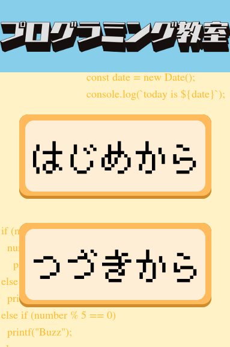
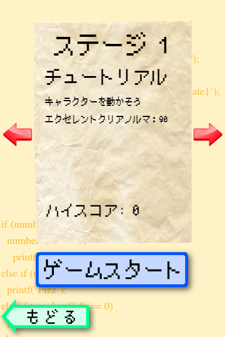
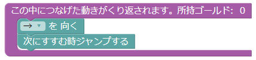

あそびかた

初めて遊ぶなら「はじめから」をおしてください。
もう遊んだことがあったら「つづきから」をおしてください。

ステージを選んで「ゲームスタート」をおすとゲームが始まります。

右側でブロックを組み立ててプログラムを作ります。

「スタート」をおすと、プログラムを読んでキャラが動きます。

ゴールのはたのところにたどりつけるようにプログラムを組みましょう！
ブロックにはそれぞれ「コスト」を持っています。
ブロックをくっつけると、そのブロックの「コスト」の分だけ、ゴールドが少なくなります。 一番小さいコストでゴールできるとハイスコアです！がんばってめざしましょう！
ブロックをくっつけると、そのブロックの「コスト」の分だけ、ゴールドが少なくなります。 一番小さいコストでゴールできるとハイスコアです！がんばってめざしましょう！
ブロックの組み立て方
右側の場所でブロックを組み立てます。

カテゴリーのところをクリックすると、
ブロックの見本が出てきます。

見本をドラッグすると、そのブロックが取り出せます。

取り出したブロックは、凹んでるところを近づけるとくっつきます。

「ずっとつづける」のブロックにくっついているブロックを読んで、キャラは動きます。